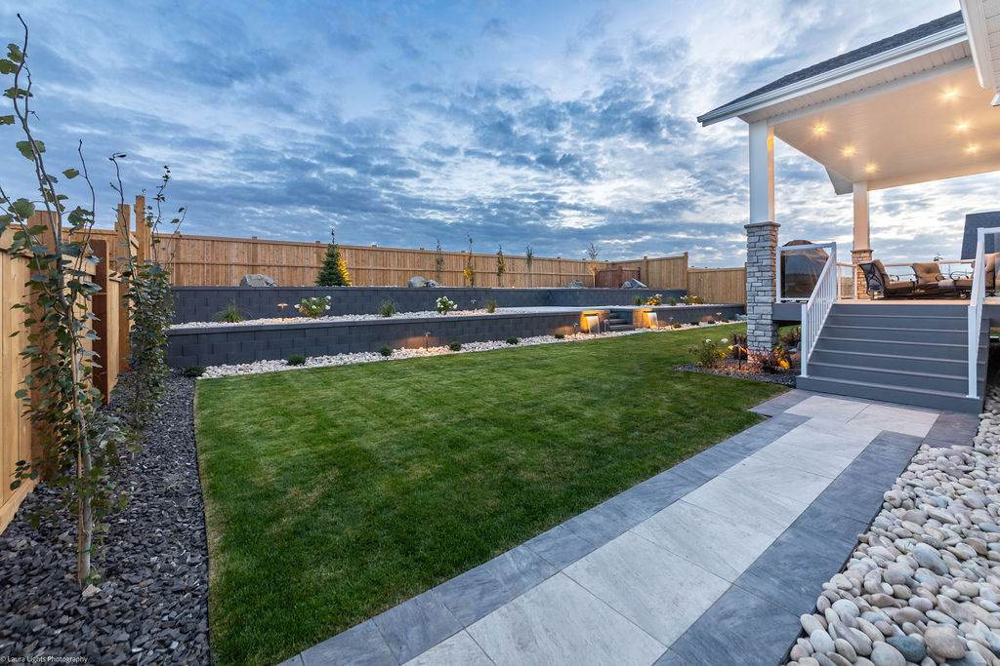

Call (250) 812 6112
Call (250) 812 6112
Call (250) 812 6112
Call (250) 812 6112

Almost always it is the base or the drainage. Both are buried by the time the job is finished, which is exactly why they are the first things cut on a cheap quote.
A wall is only as level as what it sits on. If the base isn't dug deep enough, or the material in it isn't compacted properly, the wall settles unevenly. You see it a season or two later as a lean, a bulge, or a course of block that no longer lines up with the one above it.
A retaining wall holds back soil, and soil holds water. If that water has no way out from behind the wall, it builds pressure and pushes the wall forward. Around Vernon that water arrives in spring melt and in heavy rain on a slope, so the wall has to be planned for it, not hoped through it.
That is why your wall should start with the base and the drainage, and only then the block, caps and finish. It is also why our quote won't be the cheapest one you get.
How deep is the base, and what goes in it? If the answer is vague, the base probably is too.
Where does the water behind the wall go? There should be a plan for it you can point at on the drawing.
Does it need a permit or an engineer? That depends on the height, what sits above and below the wall, and what your municipality requires. Whoever quotes it should tell you straight, and work with anyone who needs to be involved rather than leave you to sort it out.
What is above it and below it? A driveway, a house, a pool or a slope behind a wall changes what the wall has to do.
What happens on and around it? A wall can be a barrier or it can be the edge of a patio, a planting bed and the lighting that makes the space usable at night. Deciding that before the wall goes in is cheaper than retrofitting it afterwards.
The walls that look right in year five were designed with the patio, steps, planting and lighting around them. When the same crew designs your wall and builds it, the reason a level is what it is, where your drainage runs and why your base is deeper all stay with the job.
More on how we build them: retaining walls in Vernon and the North Okanagan.